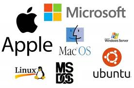
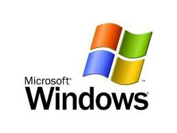

Operating systems are the essential software that manage computer hardware and resources, acting as intermediaries between users/applications and physical components. They handle core tasks like process scheduling, memory allocation, file management, and device coordination to ensure efficient, secure multitasking. Examples include Windows, Linux, and macOS, powering everything from smartphones to servers.